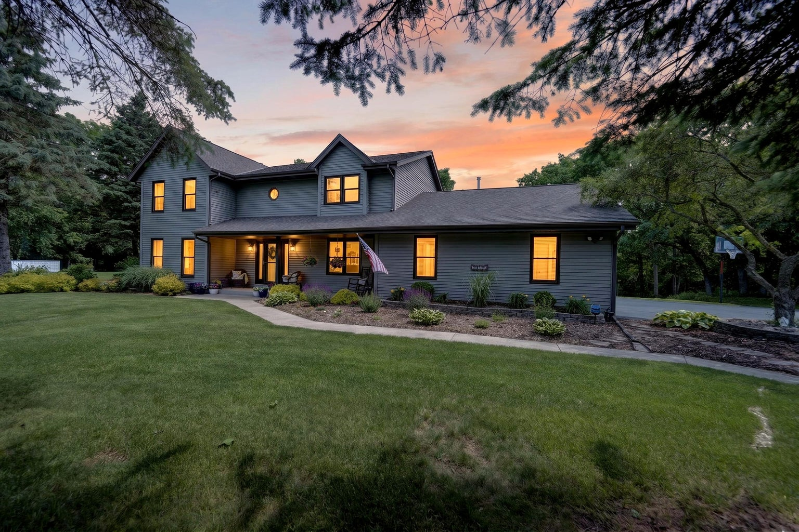

SHOWINGS BEGIN JUNE 20

$795,000
N6W31264 Alberta Drive, Delafield
3 bd
2.5 ba
3,721 sqft
1.86 acres
Beautifully updated Colonial in Carlton Ridge. Spacious primary suite with walk-in shower and soaking tub. Walkout lower level with rec room and additional den. 2.5 car attached garage plus a 32x30 fully insulated heated detached garage with finished upper level. Kettle Moraine school district.
Hot Tub
Cold Plunge
Heated Detached Garage
Kettle Moraine Schools
Request Private Preview